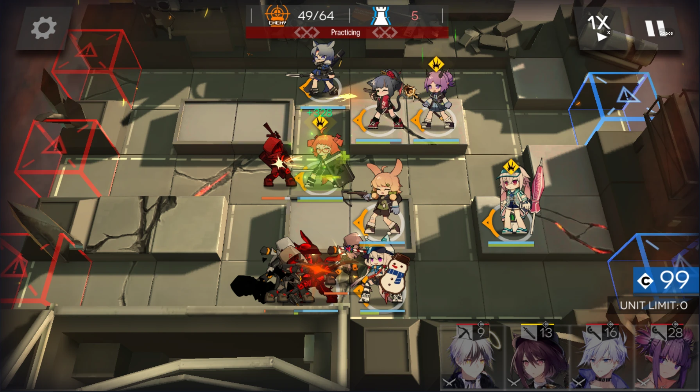

Contents
In this chapter, I will go through how to clear these stages using a mix of 3 and 4 star operators.
Before I begin, the team composition I'll be using for all chapter 4 stages will be shown below.(Except 4-3)
I will just be using 3 & a few 4 star operators, so this should be applicable for most people.
As so, I will call them by their names instead of class abbreviation.

Step 1:
Deploy the operators here as follow:
Fang, Jessica, Kroos, Courier, Beagle, Hibiscus, Ansel
Step 2:
Deploy Cardigan behind Courier if he cannot hold them off alone.
Step 3:
When the Sarkaz warriors appear, support Courier by deploying Melantha facing down.
Finale
If you follow this correctly, you should be able to complete this level.
Step 1:
Deploy the operators here as follow:
Fang, Courier, Kroos, Adnachiel, Hibiscus, Jessica, Ansel
Step 2:
There will be multiple enemies which vanguards will not be able to hold off effectively
Retreat both Fang and Courier and deploy Cardigan and Beagle.
Step 3:
Kroos and Adnachiel do not DPS as much as Jessica, so deploy Melantha behind the enemies to assist the killing of the remaining Sarkaz Mercenaries.
Finale
If you follow this correctly, you should be able to complete this level.
Compared to the other chapters, this requires one more 4 star operator to complete:
Gitano
She is an AOE caster that has a skill that attacks everyone in your range, but stuns for a short amount of time. Be careful when you use her.
Step 1:
Deploy the operators here as follow:
Courier, Fang, Kroos, Hibiscus, Adnachiel,Jessica, Ansel, Gitano
Step 2:
When possible, retreat both Vanguards with Beagle and Cardigan.
Step 3:
When the Butchers and Sarkaz Mercenaries come together, activate Gitano's skill to decimate everyone in the vicinity.
Step 4:
When Gitano gets stunned, retreat her and deploy Melantha to assist with the top lane.
Finale
If you follow this correctly, you should be able to complete this level.